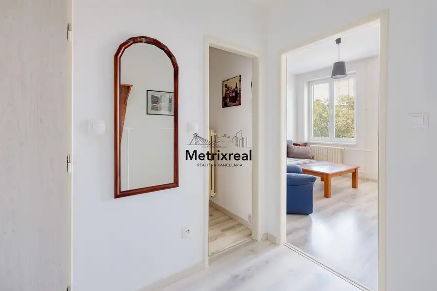
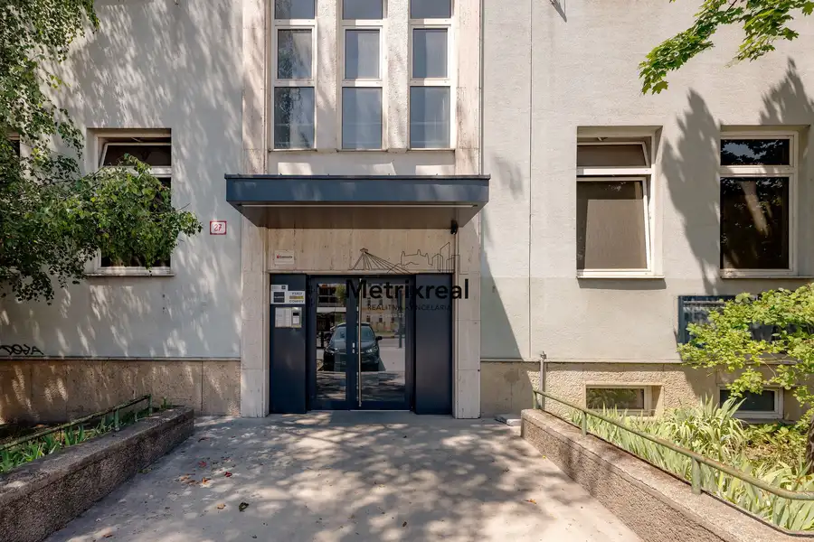
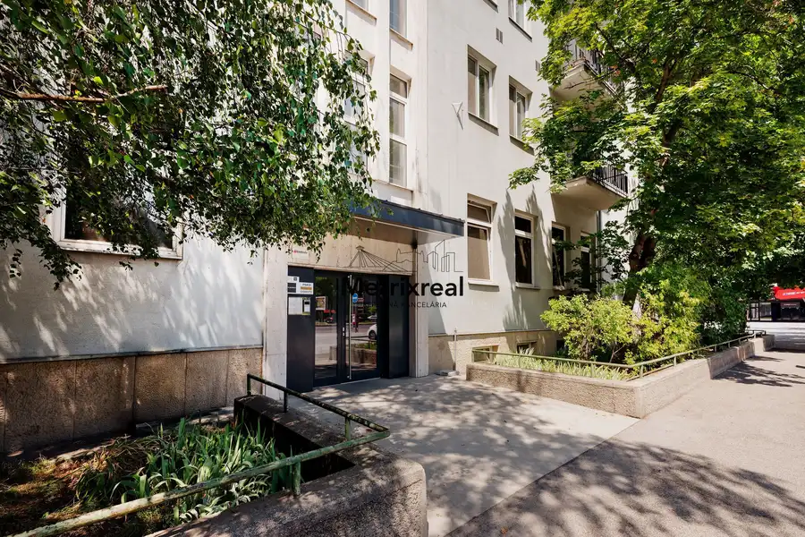
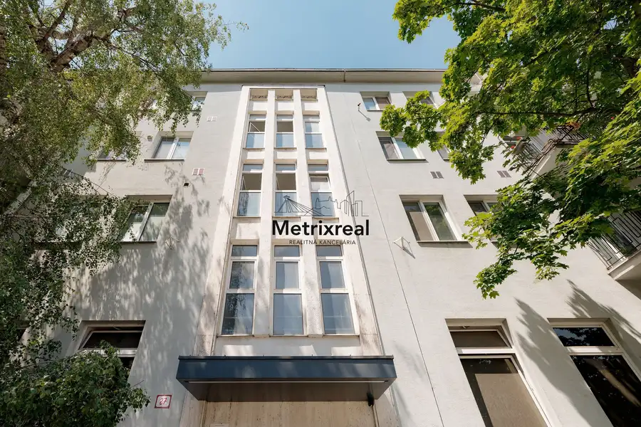
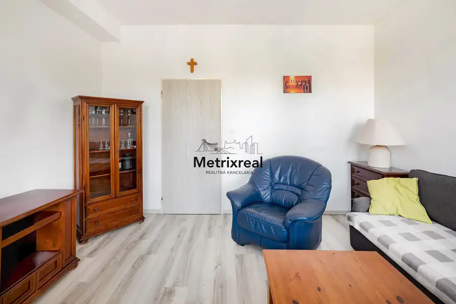
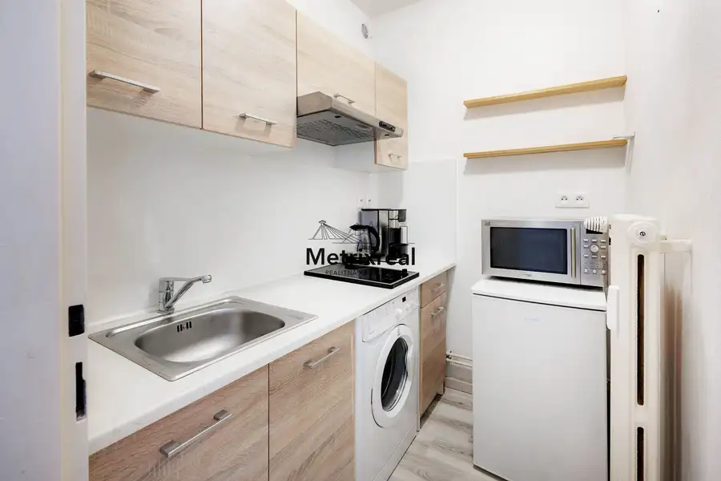

Predaj - 1iz Štýový byt na Trnavskej ceste vo vyhľadávanej lokalite s parkovaním vo dvore
Ružinov, Bratislava






- Dispozícia1-izbový
- Plocha25 m²
- Poschodie3. z 5
- StavKompletná rekonštrukcia
- VlastníctvoOsobné
O nehnuteľnosti
Realitná kancelária Metrixreal vám vo výhradnom zastúpení majiteľa ponúka na predaj svetlý, vkusne zriadený byt s úžitkovou plochou 25 m² na vyhľadávanej adrese Trnavská cesta 27 v mestskej časti Bratislava III – Nové Mesto. Ak hľadáte dokonalé štartovacie bývanie v širšom centre mesta alebo vysoko výnosnú investičnú nehnuteľnosť na okamžitý prenájom bez nutnosti ďalších úprav, táto ponuka je určená práve pre vás. Byt sa nachádza na 3. poschodí z 5 v poctivom tehelnom bytovom dome s novým výťahom. Byt prešiel v roku 2020 dôkladnou rekonštrukciou, pri ktorej boli kompletne vymenené elektroinštalácie, stúpačky, osadené plastové okná, spravené nové stierky a položené podlahy. Atmosféru domova dotvárajú vkusne znížené stropy so zabudovaným bodovým osvetlením a pôvodný liatinový radiátor s výbornou akumuláciou tepla. Byt sa predáva kompletne zariadený tak, ako ho vidíte na fotografiách – hydromasážny sprchový kút, kuchynskú linku a spotrebiče. Stačí si priniesť osobné veci a ihneď bývať. Mimoriadne nízke prevádzkové náklady:Veľkou prednosťou tejto nehnuteľnosti sú nízke reálne mesačné náklady vo výške len cca 90 € (z toho cca 50 € správa bytu vrátane fondu opráv a 40 € elektrina), čo zaručuje mimoriadne ekonomické bývanie či vysokú rentabilitu prenájmu.Obnovený bytový dom a vyhradené parkovanie za rampou:Tehelný bytový dom prešiel zásadnými obnovami – v roku 2024 bola realizovaná nová strecha a v roku 2025 bol nainštalovaný moderný nový výťah. Obrovským mestským benefitom je vyriešené parkovanie: k dispozícii je uzavretý dvor vyhradený výhradne pre vlastníkov bytov chránený elektrickou rampou na diaľkové ovládanie. V dohľadnej dobe je plánované dobudovanie ďalších parkovacích miest vo dvore, čo komfort rezidentov ešte zvýši. Byt sa predáva bez pivnice. Lokalita Nového Mesta na Trnavskej ceste patrí k najžiadanejším v meste. Hneď pod domom sa nachádza zastávka MHD s priamymi linkami smerom na Trnavské mýto, zimný štadión či Miletičovu ulicu. V pešom dosahu nájdete kúpalisko Tehelné pole, Národný futbalový štadión, jazero Kuchajda, obľúbené trhovisko Miletička, obchody aj kaviarne.Zhrnutie parametrov nehnuteľnosti:Úžitková plocha: 25 m² Poschodie: 3/5 (tehla, nový výťah 2025, nová strecha 2024) Stav: Kompletná rekonštrukcia 2020 (elektrina, stúpačky, stierky, podlahy, plastové okná) Vybavenie: Kompletne zariadený (masívny dubový nábytok na mieru, bodové svetlá, hydromasážny kút) Parkovanie: Vyhradený dvor za elektrickou rampou pre vlastníkov bytovMesačné náklady: cca 90 € / mesiac (50 € správa + fond opráv, 40 € elektrina)CENA A FINANCOVANIE:Cena nehnuteľnosti: 178 000,- EUR (Cena je konečná, vrátane provízie RK)Bezstarostná cesta k novému bývaniu: nehnuteľnosť je možné jednoducho financovať prostredníctvom hypotekárneho úveru, pričom o kompletný proces sa bez akýchkoľvek ďalších poplatkov postará naše špecializované finančné oddelenie a pripraví vám riešenie presne na mieru. Uvedená cena zahŕňa kompletný realitný a právny servis zastrešený advokátskou kanceláriou, autorizáciu zmlúv a správne poplatky spojené s prevodom vlastníckych práv na katastri. Sme členom Realitnej únie SR, čo pre Vás znamená absolútnu garanciu férového, transparentného a bezpečného priebehu celej transakcie.KONTAKT PRE OBHLIADKU:Miroslav Kadnár – senior realitný maklér (v realitách od roku 2016)Tel.: 0951778117E-mail: kadnar@metrixreal.skMetrixreal - Realitná KanceláriaNeváhajte a dohodnite si obhliadku nehnuteľnosti ešte dnes!
Parametre
- Cena vrátane energií
- Nie
- Druh
- 1 izbový byt
- Dátum zverejnenia
- 11. 08. 2026
- Energetický certifikát budovy
- nie je
- Energie
- 90
- Orientácia
- Severozápadná
- Podlažie
- 3
- Počet izieb / miestností
- 2
- Počet nadzemných podlaží
- 5
- Počet spální
- 1
- Rok poslednej rekonštrukcie
- 2020
- Rok výstavby
- 1980
- Stav nehnuteľnosti
- Kompletná rekonštrukcia
- Telekomunikácie
- Optická sieť, Káblová TV
- Typ
- Predaj
- Typ konštrukcie
- Tehlová
- Umiestnenie
- Ďalšie nadzemné podlažie
- Vlastníctvo
- Osobné
- Vybavenie
- Výťah
- Vykurovanie
- Ústredné
- Úžitková plocha
- 25 m²
Kde to je


Mohlo by Vás zaujímať
 Komerčné priestoryNové
850 080 €PESTOVATEĽSKÁ | RUŽINOV | Reprezentatívny obchodný priestor 238 m² na prízemí s výkladmi pri IKEA a Avione | Kompletná rekonštrukcia | Bez provízie
Ružinov, Bratislava
238 m²
Komerčné priestoryNové
850 080 €PESTOVATEĽSKÁ | RUŽINOV | Reprezentatívny obchodný priestor 238 m² na prízemí s výkladmi pri IKEA a Avione | Kompletná rekonštrukcia | Bez provízie
Ružinov, Bratislava
238 m²
 Komerčné priestoryNové
751 291 €PESTOVATEĽSKÁ | RUŽINOV | Investičný kancelársky trakt 285 m² (celé 2. NP) s fungujúcimi nájomcami pri IKEA a Avione | Výnos od 1. dňa | Bez provízie
Ružinov, Bratislava
285.12 m²
Komerčné priestoryNové
751 291 €PESTOVATEĽSKÁ | RUŽINOV | Investičný kancelársky trakt 285 m² (celé 2. NP) s fungujúcimi nájomcami pri IKEA a Avione | Výnos od 1. dňa | Bez provízie
Ružinov, Bratislava
285.12 m²
 DomNové
275 000 €Samostatný RD s garážou, slnečným pozemkom a projektom rekonštrukcie – Krajinská ul., Podunajské Biskupice
Podunajské Biskupice, Bratislava
122 m²
DomNové
275 000 €Samostatný RD s garážou, slnečným pozemkom a projektom rekonštrukcie – Krajinská ul., Podunajské Biskupice
Podunajské Biskupice, Bratislava
122 m²